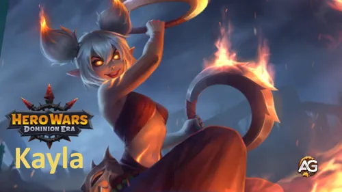

Guía de Kayla – La Heraldo del Fuego en Hero Wars: Dominion Era
- Por: Alexandre Domingos. .
Kayla, la feroz Heraldo del Fuego, inflama el campo de batalla con una ira y determinación incomparables. Dividida entre su herencia élfica cenicienta y su linaje demoníaco, canaliza su furia en ataques imparables que queman incluso las defensas más resistentes.
Antes atormentada por su pasado, Kayla ahora lucha junto a su hermano Aidan para devolver la luz y la esperanza al Dominio. Ya sea eliminando soportes de la retaguardia como Sebastian o resistiendo golpes en la primera línea, la presencia ardiente de Kayla cambia el curso de la batalla.

¿Quién es Kayla?
Kayla es una Guerrera de primera línea de la facción Heraldos del Fuego en Hero Wars: Dominion Era. Guiada por su espíritu ardiente y agilidad, sobresale al desestabilizar la retaguardia y eliminar héroes clave como Sebastian antes de que puedan cambiar el rumbo.
- Clase: Guerrera
- Posición: Primera Línea
- Atributo Principal: Agilidad
Impulsada por la ira y la redención, el viaje de Kayla es de fuego y luz — cada golpe que asesta le recuerda que incluso los más rotos pueden encender la esperanza de nuevo.
En batalla, su habilidad para atacar y destruir enemigos de la retaguardia la convierte en un arma letal para equipos ofensivos que buscan desmantelar soportes frágiles y héroes de control.
Kayla – Estadísticas Máximas
 Poder Poder184,619 |
 Salud Salud525,128 |
 Agilidad Agilidad17,856 |
 Fuerza Fuerza2,685 |
 Inteligencia Inteligencia2,555 |
 Precisión Precisión17,856 |
 Resistencia a Críticos Resistencia a Críticos17,856 |
 Ataque Físico Ataque Físico96,137 |
 Penetración de Armadura Penetración de Armadura31,890 |
 Ataque Mágico Ataque Mágico7,665 |
 Defensa Mágica Defensa Mágica34,392 |
 Armadura Armadura44,818 |
Pros y Contras de Kayla - Hero Wars: Web y Facebook
✅ Ventajas
- Guerrera de primera línea fuerte con alto Ataque Físico y daño por quemadura, lo que la convierte en una gran amenaza para los héroes de la retaguardia.
- Los Glifos de Fénix pueden causar daño puro significativo con el tiempo, especialmente cuando se detonan con Chispas Furiosas.
- Heroína ágil con la capacidad de saltar detrás de los enemigos (Poseída por el Fuego), desorganizando las formaciones de retaguardia.
- Gran sinergia con mejoras de equipo y mascotas que potencian el Ataque Físico o el daño Puro.
- La mecánica de Sobrecalentamiento proporciona Armadura y Defensa Mágica adicionales, aumentando la supervivencia en combates prolongados.
❌ Desventajas
- Vulnerable a héroes que pueden reposicionarla o empujarla (ej.: Sin Rostro, Lars, Maya, Cascade).
- El estado de quemadura consume salud con el tiempo, requiriendo un buen timing y soporte de curación.
- El daño puede ser menor si los enemigos limpian o evaden rápidamente los Glifos de Fénix.
- Depende de un posicionamiento adecuado para maximizar la efectividad de las habilidades; una mala colocación reduce el impacto general.
- Menos efectiva contra equipos con alta reducción de curación o inmunidad a debuffs.
Prioridad de Mejora de Habilidades de Kayla - Hero Wars: Dominion Era
¡Aprende a mejorar las habilidades ardientes de Kayla de manera efectiva! Esta guía explica el propósito de cada habilidad, el tipo de daño y por qué algunas mejoras importan más que otras.

1ª – Furia del Fénix (Phoenix's Fury)
Kayla lanza su chakram, marcando a los enemigos con el Glifo de Fénix. El Glifo quema a los enemigos durante 6 segundos, causando daño puro con el tiempo. Si los enemigos ya están marcados, el Glifo explota, causando daño físico masivo y aplicando el daño restante de la quemadura instantáneamente. Este es su ataque más fuerte e icónico.
Fórmula de Daño por Quemadura: (6932 + 8% Ataque Físico + Ivl * 10 Daño Puro por segundo).
Fórmula de Daño por Explosión: (152718 + 180% Ataque Físico + Ivl * 200 Daño Puro).
Prioridad de Evolución: Muy Alta – Esta es la principal fuente de daño de Kayla y define su estilo de juego. Combina daño puro y físico, haciéndola poderosa contra tanques y héroes frágiles. Maximiza esta primero para aumentar su impacto general en batalla.


2ª – Chispas Furiosas (Raging Sparks)
Cuando Kayla ataca a enemigos marcados por el Glifo de Fénix, libera chispas flamígeras que golpean a los enemigos cercanos con daño físico. Esta habilidad distribuye daño entre grupos de enemigos, haciéndola aún más peligrosa cuando múltiples objetivos están quemados.
Fórmula: (140% Ataque Físico + Ivl * 120).
Prioridad de Evolución: Alta – Esta habilidad funciona junto a su habilidad principal, aumentando su daño de área total. Es muy efectiva en combates grupales y ayuda a eliminar héroes de retaguardia más rápido. Mejora esta después de Furia del Fénix.


3ª – Poseída por el Fuego (Possessed by Fire)
Cuando la salud de Kayla supera el 60%, salta detrás del enemigo más lejano y se prende fuego a sí misma. En este estado de quemadura, pierde 2% de su salud máxima por segundo pero aumenta enormemente su frecuencia de ataque y sigue marcando enemigos con Glifos de Fénix. Cuando su salud cae por debajo del 30%, se retira con su equipo.
Fórmula: (Auto-quemadura 2% Salud por segundo).
Prioridad de Evolución: Media-Alta – Esta habilidad mejora la agresividad de Kayla y le permite aplicar más Glifos más rápido. Es arriesgada porque sacrifica salud, pero al mejorarla, se mantiene en batalla más tiempo antes de retirarse.


4ª – Sobrecalentamiento (Overheat)
Después de que Kayla deja de arder, entra en estado de Sobrecalentamiento, ganando Armadura y Defensa Mágica adicionales. Esto la ayuda a sobrevivir un poco más después de que su asalto de fuego termine.
Fórmula de Bonificación de Armadura: (27240 + 35% Ataque Físico + Ivl * 20 + 800).
Fórmula de Bonificación de Defensa Mágica: (27240 + 35% Ataque Físico + Ivl * 20 + 800).
Prioridad de Evolución: Media – Aunque ayuda con su defensa, no aumenta su potencial ofensivo. Mejora esta al final, ya que su valor principal proviene del daño y no de las bonificaciones defensivas.

Mejor Skin para Kayla – Hero Wars: Dominion Era
Descubre qué skins de Kayla mejorar primero en Hero Wars: Dominion Era según cómo cada una mejora sus habilidades y rendimiento en batalla.

Skin Predeterminada
Ganancia de stats: Agilidad +1,365
Cada punto de agilidad otorga dos puntos de ataque físico, un punto de armadura y un punto extra de ataque físico si la agilidad es el atributo principal del héroe.
Prioridad de Evolución: Alta – Esta skin mejora el atributo principal de Kayla, Agilidad, aumentando su ataque físico y armadura. Como la mayoría de sus habilidades escalan con Ataque Físico, es esencial para daño consistente y supervivencia.
Total de Piedras de Skin de Agilidad para nivel máximo:
 30,825
30,825

Skin Solar
Ganancia de stats: Salud +106,645
Prioridad de Evolución: Media-Alta – La bonificación de Salud aumenta la supervivencia de Kayla durante su fase de auto-quemadura de "Poseída por el Fuego". Esta skin es útil para combates largos pero menos impactante en su daño comparada con las otras.
Total de Piedras de Skin de Agilidad para nivel máximo:
55,410

Skin Cibernética
Ganancia de stats: Ataque Físico +7,095
Prioridad de Evolución: Muy Alta – Esta skin ofrece el mayor impulso directo al daño de Kayla. Como sus principales habilidades como Furia del Fénix y Chispas Furiosas escalan con Ataque Físico, esta skin tiene el mayor impacto en su rendimiento ofensivo en cualquier modo.
Total de Piedras de Skin de Agilidad para nivel máximo:
55,410

Skin de Mascarada
Ganancia de stats: Armadura +10,650
Prioridad de Evolución: Media – La bonificación de Armadura ayuda a Kayla a sobrevivir contra equipos físicos fuertes, pero como sus principales debilidades suelen ser por daño mágico durante su auto-quemadura, esta skin tiene un valor moderado para combates generales.
Total de Piedras de Skin de Agilidad para nivel máximo:
55,410
Prioridad de Evolución de Glifos de Kayla
Descubre el mejor orden para mejorar los glifos de Kayla en Hero Wars: Dominion Era. Aprende qué estadísticas mejoran más sus habilidades de fuego y supervivencia en combates prolongados.
1º Glifo – Ataque Físico
Este glifo potencia directamente todas las habilidades de daño de Kayla. Tanto Furia del Fénix como Chispas Furiosas escalan con Ataque Físico, haciéndolo su glifo más fuerte e importante.
Ganancia de stats: Ataque Físico +4,340
Prioridad de Evolución: Muy Alta – Como cada ataque y habilidad se beneficia del Ataque Físico, este glifo ofrece el mejor impulso general de poder. Siempre debe ser tu primera prioridad.
2º Glifo – Salud
La Salud aumenta la supervivencia de Kayla durante su estado de Poseída por el Fuego, donde pierde HP continuamente. Más salud significa que puede seguir ardiendo más tiempo, extendiendo su fase de alto daño antes de retirarse.
Ganancia de stats: Salud +62,200
Prioridad de Evolución: Media-Alta – Importante para mantener a Kayla viva mientras sacrifica su HP por daño. No es tan fuerte ofensivamente, pero muy útil para combates prolongados.
3º Glifo – Defensa Mágica
Este glifo ayuda a Kayla a resistir el daño mágico. Como es una heroína de primera línea, a menudo enfrenta usuarios de magia al inicio del combate, por lo que esta estadística le da más durabilidad contra magos.
Ganancia de stats: Defensa Mágica +6,500
Prioridad de Evolución: Media – Buena para enfrentamientos específicos, especialmente contra equipos basados en magia, pero menos valiosa que la ofensiva pura o HP.
4º Glifo – Penetración de Armadura
La Penetración de Armadura ayuda a Kayla a infligir más daño real contra tanques resistentes. Complementa su estadística de Ataque Físico, asegurando que sus golpes atraviesen las defensas enemigas eficazmente.
Ganancia de stats: Penetración de Armadura +6,500
Prioridad de Evolución: Alta – Muy útil para aumentar el daño total, especialmente contra héroes con armadura. Mejora después del Ataque Físico para un mejor escalado ofensivo.
5º Glifo – Agilidad
La Agilidad es el atributo principal de Kayla y mejora pasivamente tanto su Ataque Físico como su Armadura. Sin embargo, su crecimiento es más lento comparado con las bonificaciones directas de Ataque Físico o Penetración de Armadura.
Ganancia de stats: Agilidad +1,135
Cada punto de Agilidad otorga dos puntos de Ataque Físico, un punto de Armadura y un punto extra de Ataque Físico si la Agilidad es el atributo principal.
Prioridad de Evolución: Baja – Ofrece un escalado equilibrado pero más lento que los glifos de ataque directo. Déjalo para el final cuando todas las estadísticas principales de daño ya estén mejoradas.
Prioridad de Evolución de Artefactos de Kayla - Hero Wars: Dominion Era
Los artefactos de Kayla potencian su daño por quemadura y resistencia general. Su artefacto de arma es esencial para la ofensiva, mientras que su anillo mejora los atributos principales para un mayor daño de habilidades.

Artefacto: Chakram del Frenesí Abrasador
Ganancia de stats: Ataque Físico +33,459
Prioridad de Evolución: Muy Alta – Artefacto más importante. Se activa con la ultimate de Kayla, Rompescudos, aumentando el Ataque Físico del equipo durante 9 segundos. Esto maximiza el daño de sus habilidades y el impacto ofensivo general.

Artefacto: Pacto del Defensor
Ganancia de stats: Armadura +12,546, Defensa Mágica +12,546
Prioridad de Evolución: Media – Tercera prioridad. Proporciona defensa extra que ayuda a Kayla a sobrevivir más tiempo, pero no potencia sus habilidades ofensivas directamente.

Artefacto: Anillo de Agilidad
Ganancia de stats: Agilidad +6,249
Prioridad de Evolución: Alta – Segunda prioridad. Mejora tanto el Ataque Físico como la Armadura, potenciando directamente el daño de habilidades de Kayla mientras aporta algo de supervivencia.
Mejor Mascota para Kayla
Elegir la mascota adecuada para Kayla maximiza su daño por quemadura y la efectividad de sus habilidades, potenciando tanto la ofensiva como la supervivencia en batalla.
1º Lugar:

Albus – La mejor mascota para Kayla porque su mecenazgo aumenta tanto el Ataque Físico como el Ataque Mágico, mientras que su habilidad extra aumenta el daño Puro infligido por Kayla, amplificando directamente sus habilidades Furia del Fénix y Chispas Furiosas. Esto hace que su daño de ráfaga y quemadura sostenida sea significativamente más fuerte.
2º Lugar:

Biscuit – Útil para reducir la curación enemiga. Su mecenazgo aumenta el Ataque Mágico y la Armadura, y la habilidad extra reduce la curación recibida por los enemigos durante 5 segundos cada vez que Kayla ataca. Aunque esto mejora indirectamente su daño contra equipos de sustentación, es algo menos efectivo que Albus para maximizar el daño puro de quemadura.
Cómo Contrarrestar a Kayla - Hero Wars: Dominion Era
Estos héroes son efectivos contra Kayla al interrumpir su posicionamiento, reducir el tiempo de actividad de su quemadura o controlarla con habilidades de control de masas.

Cascade: Su Ola de Marea dispersa a los enemigos en direcciones aleatorias, rompiendo el posicionamiento de Kayla e interrumpiendo sus rotaciones de ataque básico. Esto reduce el tiempo de actividad de sus Glifos de Fénix y Chispas Furiosas, debilitando su daño total por quemadura.

Sin Rostro
Sin Rostro: Su Lanzamiento de Poder levanta al enemigo más cercano y lo deja caer en el centro del equipo enemigo, aturdiendo a todos los enemigos en rango durante 2 segundos. Esto interrumpe los ataques de Kayla y evita que aplique o detone Glifos de Fénix eficientemente.

Lars
Lars: Su Señor de la Tormenta arrastra a los enemigos al ojo de la tormenta y aplica una Marca de Agua, interrumpiendo el posicionamiento de Kayla y reduciendo la efectividad de sus habilidades de quemadura.

Maya
Maya: Sus Lazos Venenosos atrapan a los enemigos en los bordes del campo de batalla, uniéndolos y envenenándolos. El veneno causa daño puro significativo durante 6 segundos, contrarrestando la supervivencia de Kayla y forzándola fuera de la posición óptima para los Glifos de Fénix.
Mejor Bandera de Guerra para Kayla - Hero Wars
Descubre las mejores Banderas de Guerra para Kayla en Hero Wars: Dominion Era, potenciando su daño por quemadura y la eficiencia del equipo en combates de primera línea.

Bandera de Guerra de Guerreros Veloces:
Beneficio para Kayla y el Equipo: Aumenta la velocidad de enfriamiento de habilidades para Guerreros en un 5%, permitiendo que Kayla y otros aliados de primera línea apliquen Glifos de Fénix y ataques básicos con mayor frecuencia, maximizando el daño por quemadura y la presión sobre la retaguardia enemiga.

Bandera de Guerra de Declive:
Beneficio para Kayla y el Equipo: Reduce la curación del equipo enemigo en un 10%, asegurando que el daño por quemadura de Kayla de los Glifos de Fénix y Chispas Furiosas sea más efectivo, especialmente contra equipos de sustentación.

Bandera de Guerra de Preparación:
Beneficio para Kayla y el Equipo (con Aidan): Otorga 100 de energía al héroe más retrasado al inicio y cada 20 segundos. Combinada con Aidan, esto crea sinergia perfecta con Lazos de Llama y Abrazo del Fénix. El escudo de Aidan protege tanto a él como a Kayla, absorbiendo daño y explotando para aplicar Glifos de Fénix a los enemigos. Esto permite a Kayla maximizar su daño por quemadura de forma segura mientras controla la primera línea.
Mejores Equipos para Kayla - Hero Wars: Dominion Era
Mejor Equipo #1
Este equipo se centra en maximizar el daño por quemadura de Kayla mientras Sebastian protege al equipo contra efectos negativos. Lyria proporciona robo de vida para Kayla, y Aidan ofrece protección y sinergia a través de Banderas de Guerra. Las mascotas elegidas amplifican el daño puro de Kayla, convirtiéndola en una amenaza constante.
Notas de Estrategia del Equipo:
- Bandera de Guerra de Preparación – Otorga 100 de energía al héroe más retrasado al inicio de la batalla, repitiéndose cada 20 segundos. Ideal para Aidan en la retaguardia.
- Lazos de Llama de Aidan – Establece un vínculo mutuo con el aliado más lejano, o con Kayla si está en el equipo. El aliado vinculado se convierte en el objetivo del Abrazo del Fénix. Los héroes comparten salud, pasando cualquier curación o daño recibido entre sí. También obtienen una bonificación que escala con su Armadura y Defensa Mágica.
Kayla - Mejor Equipo #2
Este equipo coloca a Dante directamente detrás de Kayla, donde asume el rol de un segundo frontliner — actuando como Dante Tanque. Esta composición es excelente para la defensa, especialmente en combates prolongados. Combinada con la Bandera de Guerra de Fuerza de Mascota, el poder de Axel se potencia significativamente.
| Kayla - Mejor Equipo #2 | |||||
|---|---|---|---|---|---|
|
|
|
|
|
|
|
|
|
|
|
|
|
|
Conclusión – Guía de Kayla Hero Wars: Dominion Era
Kayla es una poderosa guerrera de primera línea capaz de causar daño masivo por quemadura mientras controla las retaguardias enemigas. Sus Glifos de Fénix y Chispas Furiosas la convierten en una amenaza constante, especialmente cuando se combina con las mascotas, Banderas de Guerra y artefactos adecuados.
Para maximizar su efectividad:
- Concéntrate en mejorar las habilidades en la prioridad recomendada, enfatizando Furia del Fénix para alto daño de ráfaga y quemadura sostenida.
- Equipa artefactos que potencien el Ataque Físico y la supervivencia, como el Chakram del Frenesí Abrasador y el Anillo de Agilidad.
- Elige mascotas que amplifiquen el daño Puro o mejoren la sinergia de habilidades, como Albus.
- Usa Banderas de Guerra que aceleren los enfriamientos, reduzcan la curación enemiga o proporcionen energía a los aliados, especialmente al combinar con Aidan para Lazos de Llama y Abrazo del Fénix.
- Ten cuidado con los contadores como Sin Rostro, Lars, Maya y Cascade, y ajusta la composición del equipo en consecuencia.
En general, Kayla destaca cuando se usa estratégicamente con posicionamiento, sinergia y soporte adecuados. Con una planificación cuidadosa, puede dominar las batallas, controlar la primera línea y causar daño devastador a los enemigos, convirtiéndola en una heroína imprescindible en Hero Wars: Dominion Era.

¡Explora nuevas habilidades con nuestras guías destacadas!


¡Deja Tu Opinión!
¿Te gustó nuestra Guía de Kayla para Hero Wars Web y Facebook? ¿Hay algo que no entendiste o te gustaría sugerir cambios? Te invitamos a unirte a nuestra sección de comentarios en la página del blog Alexandre Games. No dudes en expresar tu opinión, aclarar tus dudas y compartir tus sugerencias.
Haz clic en el botón de abajo para comenzar: